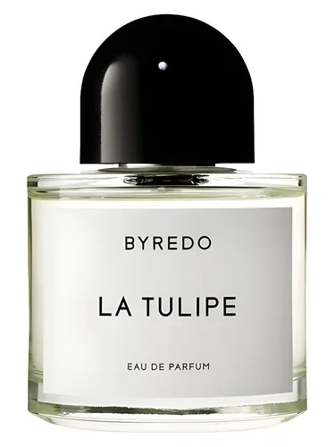

La Tulipe
- Para mujer
- Familia floral
- Lanzado en 2010
- Ideal para primavera y verano
Con caja$2,500Te lo conseguimos en 2 días a 1 semanaSin caja$950Te lo conseguimos en 2 días a 1 semana
No disponible: te lo conseguimos en 2 días a 1 semana
Cómo huele
Floral
Verde
Especiado suave
Sus notas
Salida
fresiaciclamenruibarbo
Corazón
tulipán rosa
Fondo
notas verdesvetivernotas amaderadas
La Tulipe de Byredo es un perfume floral para mujer, lanzado en 2010. Abre con fresia y ciclamen, en el corazón tiene tulipán rosa y deja un fondo de notas verdes y vetiver. Lo que más se siente: floral, verde y especiado suave.